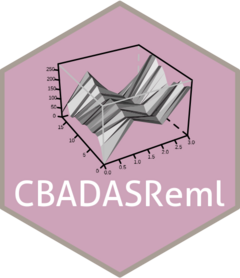

Experimental design power
design-power.RmdIntroduction
This document will hopefully explain exactly the theory behind the
“statistical power” value returned by the function
design_power.
Experimental designs are not necessarily all made equal. There is (usually) a “gooder” and a “badder” way to produce experimental designs, depending on many different factors that I will try to go over in this document.
The function design_power will try to give a “safe”
estimate of an experimental design’s “statistical power”, which is
interpreted as a probability that a hypothesis test performed on the
design will give a true positive result. A design/test
with a power of 0.8, has an 0.8 probability of rejecting the null
hypothesis when the true treatment difference is
,
assuming the model and covariance assumptions are correct.
Design of Experiments
We all know what an experimental design is. Formally, we try and stick to a few very important principles, outlined by Ronald Fisher, when creating an experiment:
- Randomisation
-
Placement of experimental units within a block must be random. This means that each element of the population being modelled has an equal chance of being part of the experiment. This is a huge one, it mitigates the influence of confounding due to variables that aren’t part of the experiment.
- Replication
-
The experiment should be repeated multiple times to get variance estimates. This helps identify the sources of variation in the observations, and where to attribute this. Typically, the term “blocking” is used interchangeably with replication, but I believe this is incorrect. Replication is repetition of the experiment, blocking is a form of local control.
- Local control
-
Non-random arrangement of experimental units into groups. This reduces how much existing “nuisance” effects from leaking into our treatment effect estimates. The difference between blocking vs. randomisation is: “Block whatever you can, randomise what you can’t”.
Consideration of all of these will result in at least a “decent” experiment. But sometimes it is not obvious how to fully avoid breaking these rules!!
Spatial Statistics Pitfalls
Of particular note in our field of spatial statistics, is the presence of spatial dependence. This is the terminology used to refer to the fact that observations that are physically near to one another are not independent, and this dependence drops off as distance increases. If we make a simple experiment without considering this fact, we are breaking the local control rule in a bit of a nuanced way.
Blocking allows us to recognise that a nuisance effect is present, and use a blocking factor to absorb this nuisance variation, leaving the variation of interest to be explained by the treatment effect.
But! When we look at a small plot trial, it is clear that some things are going to influence the observations in ways that are difficult to block or randomise:
Nearby observations are more dependent than distant observations.
Observations in the same column or row may be more related due to the nature of how the experiment was placed or observed.
There may be variation in treatment effects simply due to the location of a given experimental unit.
These are nuisance effects that will pollute our treatment effects!!! We have to block them, and if we can’t we have to randomise within them!
But we can’t, how can we block if we don’t know the nature of the soil? Or how the row/column effects came to be?
Local control
We can’t simply block away our problems here. But we know that there are arrangements that are better than others:
There are positions in the trial area that are more favourable, and placing one treatment there will lead to confounding. If we get lucky and the randomisation is equally favourable to all treatments, then this is good. But how can we purposefully do this?
Let’s try a naive design summary. For 3 treatments:
-
T1has 5 replicates -
T2has 5 replicates -
T3has 5 replicates
But is T1 clumped in one corner? Has T2
been placed along a gradient in soil fertility?
Let’s try a more principled approach. We are using mathematics to analyse the experiment, so let’s use some mathematics to try and solve this problem.
Fisher information normally
Ronald Fisher was a piece of shit, but he seemed pretty smart. He came up with this idea of Fisher information, how much information an observable random variable carries about an unknown parameter of a distribution that describes .
We can use this concept here. Let’s start by modelling our observations as a linear function of the input variables:
is a vector of our observations, is a design matrix, is the vector of regression coefficients and is the vector of residual errors.
The design matrix describes the structure of the experiment, recording which treatment was assigned to which experimental unit, which block the EU belongs to, and any other model terms that are present.
The residual errors (mean zero, covariance ):
And thus:
To calculate the Fisher information, we must consider our design matrix as fixed, as its the proposed experiment layout we are evaluating. Our random object is , the vector of future observations that will be realised if the experiment were run. The likelihood therefore describes the probability density of observing , given the design , the model parameters and the covariance matrix . We need a probability density function: the Gaussian PDF, which is a function relating the random variable to a parameter. It is the probability density of observing , given the fixed , the parameter and the covariance .
But this is backwards. We have a known , and we want the that makes the observed the most plausible.
If has a sharp “peak” in its value with a change in , then we can say with confidence what the “correct” value is. If has a maximum, but it’s not sharp, then it’s harder to say where the true value is. This would imply that there is a kind of variance to consider here: Low variance = sharp peak, and more certainty on where is. High variance = smooth, low certainty on where is.
This idea of how changes with respect to changes in is known as the score, and can be formulated as the partial derivative of the log-likelihood, with respect to , evaluated at the true value of :
At the true parameter value , the expected value of the score is zero:
$$\begin{equation} \E \left[ \frac{\partial}{\partial \beta} \log f(y ; \beta, \Sigma, X) \bigg| \beta_0 \right] = 0 \end{equation}$$
The Fisher information is the expected value of the variance of the score, at the true parameter :
$$\begin{equation} \mathcal{I}(\beta) = \E \left[ \left( \frac{\partial}{\partial \beta} \log f(y ; \beta, \Sigma, X) \right)^2 \bigg| \beta_0 \right] \end{equation}$$
This quantity quantifies how variable the likelihood’s gradient is under repeated samples, and how sharply the log-likelihood changes around the true parameter.
Let’s solve it for our linear model with normal errors, the likelihood function is:
$$\begin{equation} f(y ; \beta, \Sigma, X) = (2 \pi)^{-\frac{n}{2}} \left| \Sigma \right|^{-\frac{1}{2}} \exp \left( -\frac{1}{2} \left( y - X \beta \right)\T \Sigma^{-1} \left( y - X \beta \right) \right) \end{equation}$$
And log-likelihood:
$$\begin{equation} \log f(y ; \beta, \Sigma, X) = -\frac{k}{2} \log(2 \pi) -\frac{1}{2} \log \left| \Sigma \right| -\frac{1}{2} \left( y - X \beta \right)\T \Sigma^{-1} \left( y - X \beta \right) \end{equation}$$
Then we take the derivative with respect to the parameter of interest :
$$\begin{equation} \begin{aligned} \frac{\partial}{\partial \beta} \log f(y ; \beta, \Sigma, X) &= \frac{\partial}{\partial \beta} \left( -\frac{1}{2} \left( y - X \beta \right)\T \Sigma^{-1} \left( y - X \beta \right) \right) \\ &= -\frac{1}{2} \left( -X\T \Sigma^{-1} \left( y - X \beta \right) - X\T \Sigma^{-1} \left( y - X \beta \right) \right) \\ &= X\T \Sigma^{-1} \left( y - X \beta \right) \end{aligned} \end{equation}$$
This is the score. Now we square it:
$$\begin{equation} \begin{aligned} \left( \frac{\partial}{\partial \beta} \log f(y ; \beta, \Sigma, X) \right)^2 &= X\T \Sigma^{-1} \left( y - X \beta \right) \left( X\T \Sigma^{-1} \left( y - X \beta \right) \right)\T \\ &= X\T \Sigma^{-1} \left( y - X \beta \right) \left( y - X \beta \right)\T \Sigma^{-1} X \end{aligned} \end{equation}$$
And take it’s expected value at the true parameter :
$$\begin{equation} \begin{aligned} \E \left[ \left( \frac{\partial}{\partial \beta} \log f(y ; \beta, \Sigma, X) \right)^2 \bigg| \beta_0 \right] &= \E \left[ X\T \Sigma^{-1} \left( y - X \beta_0 \right) \left( y - X \beta_0 \right)\T \Sigma^{-1} X \right] \\ &= X\T \Sigma^{-1} \E \left[ \left( y - X \beta_0 \right) \left( y - X \beta_0 \right)\T \right] \Sigma^{-1} X\T \\ &= X\T \Sigma^{-1} \E \left[ \varepsilon \varepsilon\T \right] \Sigma^{-1} X \\ &= X\T \Sigma^{-1} \Var [ \varepsilon ] \Sigma^{-1} X \\ &= X\T \Sigma^{-1} \Sigma \Sigma^{-1} X \\ &= X\T \Sigma^{-1} X \end{aligned} \end{equation}$$
Which is the inner product of the design matrix in the geometry induced by the covariance of the residuals.
What does this even mean?
We’ve finally got some equations for the Fisher information. But I’ve purposely left the covariance of the linear regression open as . Usually, this covariance would be “IID”: independent, and identically distributed, meaning . This would mean the Fisher information is:
$$\begin{equation} \begin{aligned} \mathcal{I}(\beta ; X) &= X\T \Sigma^{-1} X \\ &= X\T \left( \sigma^2 I \right)^{-1} X \\ &= \frac{1}{\sigma^2} X\T X \end{aligned} \end{equation}$$
However, remember our initial problem? We are suffering because we can’t block and randomise our problems away! We need another technique for local control! This is our chance!!!
Ah yes, local control!
Great, let’s say that instead of the residuals being IID, we can allow them to be a little bit correlated. We can say the residuals have an correlation structure, meaning the rows and the columns of the design are correlated such that neighbouring EUs have correlation, then for each step further they have then , etc. This means we want a covariance of:
Where contains the structure, and is the variance parameter. The Fisher information is now:
$$\begin{equation} \mathcal{I}(\beta ; X) = \frac{1}{\sigma^2} X\T R^{-1} X \end{equation}$$
Meaning we are calculating the Fisher information in a geometry induced by the spatial covariance structure of the design.
This means that nearby observations are partially redundant, and distant observations contribute more independent information to the model. Treatment arrangements where comparisons are spread across the paddock tend to contain more information about the parameter of interest.
Noncentrality Parameter
Now that we have this Fisher information, we can use it to calculate the uncertainty of any treatment comparison. For a given treatment contrast $c\T \beta$, the variance of the estimated contrast is $\Var [c\T \hat{\beta}] = c\T \mathcal{I}(\beta)^{-1} c$, and thus it has standard error $\mathrm{SE}[c\T \hat{\beta}] = \sqrt{c\T \mathcal{I}(\beta)^{-1} c}$.
We care about the standard error: a smaller SE means the design has more resolving power for that treatment contrast. To estimate the power, we specify the treatment difference worth detecting, , and say that the signal-to-noise ratio is:
$$\begin{equation} \lambda = \frac{\delta}{\mathrm{SE}[c\T \hat{\beta}]} \end{equation}$$
This is called the noncentrality parameter. It is the distance between the null hypothesis and the alternate hypothesis, in standard-error units. When we know this distance, the power is simply the probability that the test statistic falls in the rejection region. If , the true treatment difference is two SEs away from zero, if it’s four SEs away.
Statistical Power
Known Covariance
Say we are still interested in the contrast $c\T \beta$. This could be the mean of
treatment T1 minus the mean of T2. The null
and alternate hypothesis for this is:
$$\begin{equation} \begin{aligned} H_0 &: c\T \beta = 0 \\ H_1 &: c\T \beta = \delta \end{aligned} \end{equation}$$
If the covariance matrix is known, then:
$$\begin{equation} c\T \hat{\beta} \sim \mathcal{N} \left( c\T \beta, c\T \mathcal{I}(\beta)^{-1} c \right) \end{equation}$$
So the test statistic is a -test:
$$\begin{equation} Z = \frac{c\T \hat{\beta}}{\mathrm{SE}[c\T \hat{\beta}]} \end{equation}$$
And under the null and alternative hypotheses:
For a two-sided test with significance threshold , reject the null when:
And therefore! The power is:
Important
That is, the power is the probability that is is more extreme than a threshold value from a normal distribution centred at .
Or in other words:
The power is the probability that the experiment would detect the treatment difference, assuming the real effect is large enough to shift the test statistic standard errors away from the null.
Unknown Covariance
If the covariance is unknown and must be estimated from the data, we use a -test instead. This is due to the fact that our denominator becomes a random parameter that must be estimated:
$$\begin{equation} T = \frac{c\T \hat{\beta}}{\hat{\mathrm{SE}}[c\T \hat{\beta}]} \end{equation}$$
And under the null and alternate hypotheses, this is -distributed with degrees of freedom:
Something to note:
is the -distribution with DoFs. The -distribution describes how a test statistic is distributed when the null hypothesis is true.
is the noncentral -distribution with DoFs. The noncentral -distribution describes how a test statistic is distributed when the null hypothesis is false.
Great. Now, for a two-sided test, we reject the null when
Therefore the power is:
Omnibus Test
If we want to compare multiple treatments as an omnibus test, letting be the vector of all treatment contrasts to compare:
We use the Wald test:
$$\begin{equation} W = ( C \hat{\beta} )\T \left( C \mathcal{I}(\beta)^{-1} C\T \right)^{-1} ( C \hat{\beta} ) \end{equation}$$
Under the null and alternative hypotheses:
Where is the chi-squared distribution with DoFs, and is the noncentral chi-squared distribution, with DoFs and noncentrality parameter.
So, for one contrast the noncentrality parameter was . For multiple contrasts, it is just the Wald statistic:
$$\begin{equation} \Lambda = ( C \beta )\T \left( C \mathcal{I}(\beta)^{-1} C\T \right)^{-1} ( C \beta ) \end{equation}$$